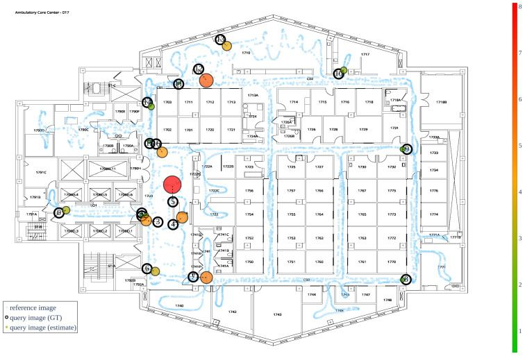
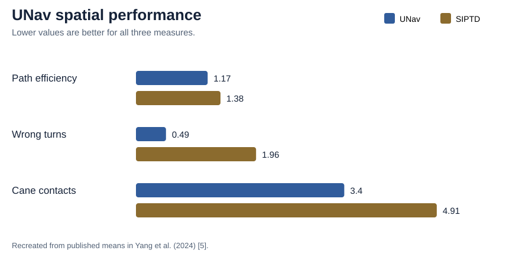
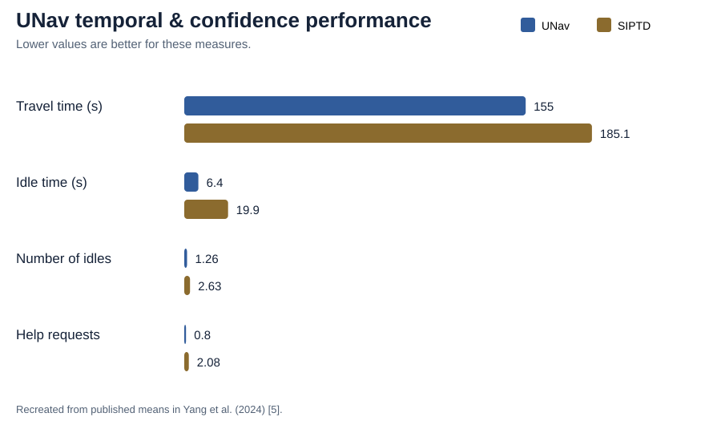
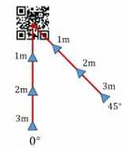
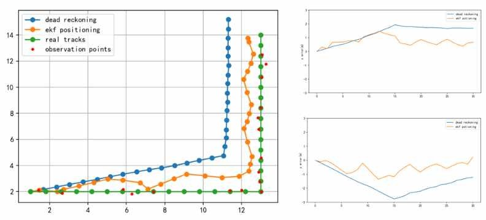

04 · Evidence
Successes, Failures & Comparison
Page summary0:00
A system description tells us what should happen. Evaluation tells us what actually happened under test conditions. The two focal approaches provide different kinds of evidence.
UNav technical accuracy (system paper)
Before any user study, the 2022 system paper measured how accurately UNav localizes a camera image. The test site was the ambulatory care center of NYU Langone Health (an area of roughly 264 × 900 ft). The reference map was built from 4,258 equirectangular 360° frames, each sliced into 18 perspective images (76,644 reference images in total). At 17 test locations with surveyed ground truth (column corners, door frames), the average location error was below 1 m and the average direction error was about 2°. With the number of retrieved candidates set to K = 20, one localization took roughly 2–3 s on the authors' single-threaded implementation. [4]

Reading the heatmap (our observation): most estimates sit almost on top of their ground-truth circles, but a few points, especially in the open central area, show noticeably larger errors. "Below 1 m on average" therefore does not mean below 1 m everywhere. Open, less distinctive views and sparse reference imagery are plausible causes, but the paper does not analyse individual outliers.
Deep dive: does a denser map help? (optional)
The same paper also tested how map density affects accuracy. It downsampled the reference frames (keeping every α-th frame, α from 1 to 50) and the perspective slices (every β-th slice). Denser maps tended to give lower error, though not in every case (the reported probability was p ≈ 0.72 for frames and ≈ 0.65 for slices). For very sparse maps, PnP sometimes failed because too few overlapping views remained to supply 2D–3D correspondences. [4] Our interpretation: mapping effort cannot be cut arbitrarily, because sparse reference imagery degrades exactly the geometric step that recovers heading.
UNav user evaluation (efficacy study)
Study design. The 2024 study recruited 20 legally blind participants in Thailand: 12 blind (visual-function rating 6) and 8 with low vision; mean age 38.3 ± 8.4 years; 9 female. Testing took place on Mahidol University's Salaya campus, where the team mapped seven buildings (≈ 92,900 m², about 75% indoors). From these maps they built 24 routes (20 indoor, 4 outdoor between buildings). Each route was 50–200 m with 2–4 turns and was unfamiliar to the participants. It was a non-inferiority, repeated-measures crossover design: each participant walked the same route once with UNav (the "active" condition) and once with standard in-person travel directions, SIPTD (the "passive" condition). In SIPTD, a chaperone gives the whole route verbally once, for example "walk forward 15 meters, then turn left…". The order of the two conditions was counterbalanced. Non-normal or count data were tested with Wilcoxon matched-pairs signed-rank tests. [5]
Hardware used in the study. Participants wore a backpack holding an NVIDIA Jetson Orin board, a 16 MP USB camera on the chest strap and a bone-conduction headset with a microphone. They selected destinations by voice and heard spoken instructions while keeping their ears open to ambient sound. Localization, matching and route planning ran on a remote server (an NVIDIA DGX A100 node at the Mahidol AI Center). [5]
All nine reported metrics
| Metric | UNav (active) | SIPTD (passive) | Test statistic | Reported meaning |
|---|---|---|---|---|
| Navigation success | 100% | 97.5% | not tested | Ceiling effect prevented significance testing. |
| Path-efficiency ratio (actual ÷ optimal, lower is better) | 1.17 | 1.38 | z = −3.59, p < 0.001 | Significantly more direct routes |
| Wrong turns (mean) | 0.49 | 1.96 | z = −3.52, p < 0.001 | Significantly fewer |
| Cane contacts (mean) | 3.40 | 4.91 | z = −2.43, p = 0.015 | Significantly fewer |
| Total time | 155.0 s | 185.1 s | z = −3.22, p = 0.001 | Significantly faster |
| Idle time | 6.4 s | 19.9 s | z = −3.10, p = 0.002 | Significantly less stopping |
| Number of idles | 1.26 | 2.63 | z = −2.72, p = 0.007 | Significantly fewer stops |
| Gait speed | 0.75 m/s | 0.80 m/s | z = −1.55, p = 0.121 | No significant difference |
| Help requests (mean) | 0.80 | 2.08 | z = −2.98, p = 0.003 | Significantly fewer (used as a confidence measure) |
All values reported in Yang et al. (2024) [5]. UNav was better on 8 of 9 metrics, 7 of them statistically significant. Gait speed was the exception.


Deep dive: subgroup analysis (optional)
Who benefited most?
The authors compared passive-minus-active difference scores between the blind group (n = 10 usable) and the low-vision group (n = 8). Blind participants gained significantly more from UNav in total time (44.4 s vs. 12.4 s improvement; t(16) = 2.150, p = 0.047) and in path efficiency (0.292 vs. 0.106; t(16) = 2.191, p = 0.044). [5] This makes sense: the less a person can use residual vision to recover from mistakes, the more value step-by-step guidance adds.
Real-time performance in the field
The study reports an average client → server → client round-trip time of 3.62 s, ranging from 0.24 s to 5.96 s. Per user, the server used about 0.62% CPU, 13.85% GPU and 4.7% of GPU memory, so the authors estimate one GPU could serve about 7 users simultaneously. Each query image was about 70 kB, and an instruction message only 122 bytes. [5] Our interpretation: at a gait speed of about 0.75 m/s, a 3.6 s delay means the user may have moved roughly 2.7 m before an instruction arrives. This is acceptable on straight corridors but is one reason short, frequent instructions and faster sub-map localization (which the authors say they are developing) matter.
Important limitations of the UNav evidence
- Short, simple routes: only 50–200 m with 2–4 turns. The authors state that differences may change on longer or more complex routes. [5]
- Same route twice: each participant walked each route in both conditions, so route learning may have reduced the observed differences. Ordering had a significant effect on total time (t(10) = 2.324, p = 0.043). [5]
- Chaperone present: chaperones stayed 1 m away, corrected participants who went more than 3 m in the wrong direction, and answered help requests. Conditions were safer than true independent travel. [5]
- Network dependence: processing ran on a server, so performance depends on connectivity and server availability. [5]
- Sample: 20 participants recruited in one region, with one excluded for data problems and different numbers of routes per person. [5]
Overall, this is strong evidence for UNav under the tested conditions, not proof that it works in every building or on every route.
QR-map experimental evidence
The QR paper reports two small engineering experiments, not a user study. [3]
Experiment 1 — how accurately one QR code gives pose
A phone camera photographed a QR code from 1, 2 and 3 m away, along the code's perpendicular (0°) and along a 45° oblique axis, with 20 images per position. Ground-truth camera pose came from a total station. [3]

| Distance | Position error, 0° | Position error, 45° | Heading error, 0° | Heading error, 45° |
|---|---|---|---|---|
| 1 m | 0.15 m | 0.08 m | 1° | 4° |
| 2 m | 0.25 m | 0.21 m | 2° | 4° |
| 3 m | failed to decode | |||
Values from Tables 3–4 of [3]. The printed tables label both columns "0°"; based on the paper's description of the 0° and 45° test axes (its Figure 6), we read the second column as 45°.
From this, the authors conclude that a pedestrian walking past a wall-mounted code must stay within about 2 m of the wall for detection to work. [3] Our interpretation: the sharp cliff between 2 m and 3 m comes from the code's printed size and the camera resolution. Larger codes would extend the range but take more wall space, a concrete example of the marker-infrastructure trade-off.
Experiment 2 — PDR alone vs. QR + PDR fusion
A walk of 31 position states along an L-shaped route passed six QR codes fixed to pillars on one side of the path. [3]

The paper reports this result graphically and qualitatively: PDR alone accumulates error and deviates significantly, while QR-aided fusion stays closer to the true trajectory and "effectively reduces cumulative error." [3] Reading the plot (our estimate, not a reported statistic): pure dead-reckoning error grows to roughly 2–3 m by mid-route, while the fused estimate stays mostly within about 1 m.
What this evidence does and does not show
- Shows: a single QR code gives decimetre-level position and a few degrees of heading at 1–2 m, and periodic QR fixes bound PDR drift. [3]
- Does not show: no blind or low-vision users, a single short route, no summary error statistic for the fused track, and no timing or battery measurements. [3]
- UNav's user-study numbers must not be attached to the QR approach. The two systems were evaluated in completely different ways.
Comparison
| Dimension | QR + IMU [3] | UNav [4] [5] |
|---|---|---|
| Visual reference | Explicit QR markers | Natural scene/reference images |
| Installed navigation infrastructure | Yes: QR nodes/control points | No dedicated positioning markers/beacons |
| Additional sensing | IMU fusion | Camera-centric localization; server/mobile computation |
| Mapping | Indoor road-network nodes and edges | Reference imagery + topometric/floor-plan representation |
| Reported localization accuracy | 0.08–0.25 m and 1–4° from a single code at 1–2 m; fails at 3 m | < 1 m and about 2° at 17 hospital test points |
| Reported speed | Not reported | 2–3 s per localization (2022); 3.62 s average round trip (2024) |
| Behaviour between fixes | PDR + EKF dead reckoning, corrected at each code | Each query image is localized independently |
| Route planning | Dijkstra-style search on the QR node/edge network | Dijkstra on a graph of reference-image locations |
| Setup effort | Survey and install a code at every node | Walk the building with a 360° camera, then align the map to the floor plan |
| User evidence | None reported (engineering tests only) | 20-participant blind/low-vision efficacy study |